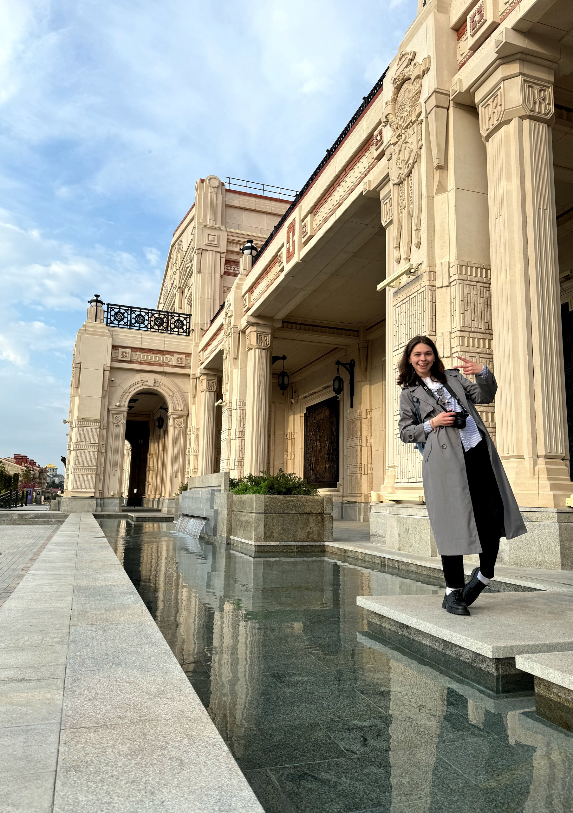
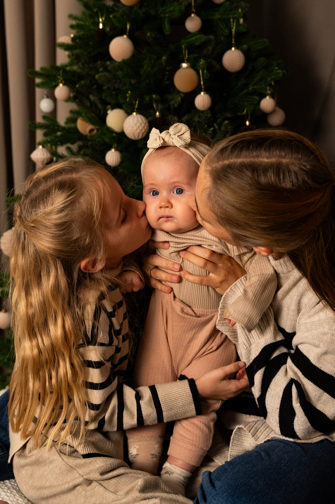
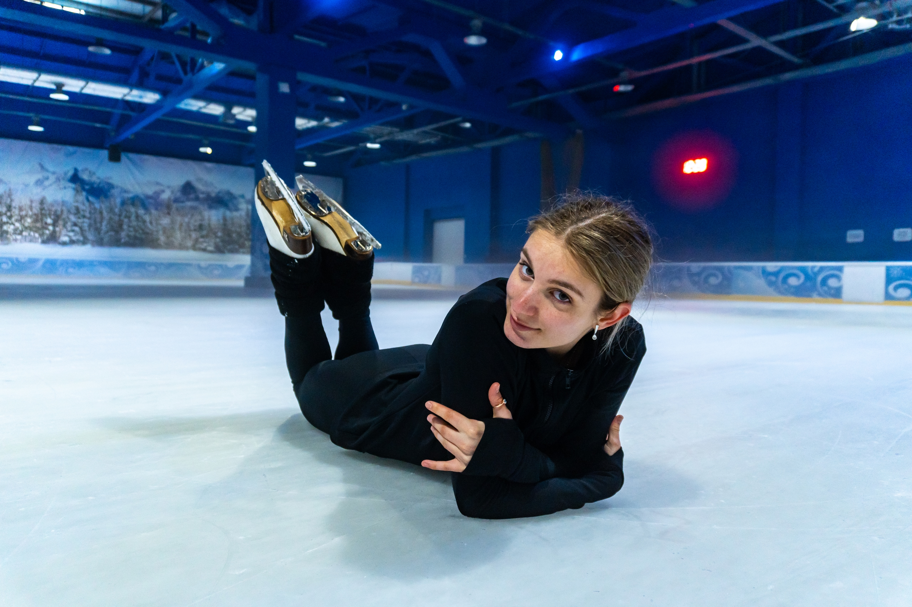

Представь, всего год назад Nika - фотограф и видеограф из Севастополя боялась начать заявлять о себе, не верила в себя и зарабатывала 0 рублей в месяц на своем хобби. Работала в найме, чувствовала выгорание и ловила вдохновение только в творческих
съёмках для друзей… за кофе.
Но в феврале всё изменилось.
Один разговор, один курс -и уже к лету посыпались заказы. Без дорогой рекламы, без опыта в продвижении. Первые клиенты пришли просто из ленты ВКонтакте.
Как за несколько месяцев вырасти с нуля до стабильного потока заявок?
Почему даже не закончив курс, она уже зарабатывала больше, чем в офисе?
И как социальные сети стали её главным источником клиентов без бюджета на рекламу?
Откровенно, с юмором и без прикрас, в нашем с ней интервью.
— Расскажи, что было до курса, какой средний доход был в месяц? Сколько клиентов?
— До курса я вообще практически не продвигала свои услуги и боялась начать. Я тогда работала в найме.За предыдущие два года до всего этого было 3 свадебных съёмки в качестве видеографа. 2 потому что у меня было объявление на авито без продвижения и одна по знакомству
Потом фоткала друзей, делали творческие съемки, доход от этого дела был 0 руб в месяц))))
«Клиентами» были исключительно друзья за кофе и угощения.

— Расскажи, почему решила пойти на курс? Что хотелось изменить?
— Курс попался в ленте, пару месяцев следила за ребятами.
Хотелось со своими страхами разобраться и уже начать что-то делать, именно было сопротивление сделать первый шаг. Хотелось сильно уволиться из найма, так как это было сплошным страданием для меня.
Затем в феврале мне написала Евгения и предложила созвон, я согласилась.
Мы созвонились,пообщались. Она меня так замотивировала сильно, что я в себя поверила в тот день. И где-то через месяц решила зайти на курс, так как понимала, что мне нужна помощь в первых шагах, ведь я не знаю что именно нужно делать.
— Какие-то сложности были во время обучения на нашем курсе? Насколько сложно было учиться? За сколько прошла обучение?

— Нет, не думаю, все понятно, все уроки подробные очень)
Мне еще тогда в начале очень помогли потоки быстрых стартов, где мы группами людей делали действия и для нас проводили разборы. Вот это прям мощно было, когда ты среди таких же людей, которые учатся всему этому и поддерживают друг друга.
Я если честно, до сих пор не прошла курс до конца))
Просто так получилось, что с лета начали активно идти продажи, заказы и у меня пропало свободное время от слова совсем. И так было до середины осени и в декабре, я даже успела немного выгореть на этом и задолбаться… Сейчас пока что отдыхаю от работы и хочу разбираться с курсом дальше, вчера кабинет пополнила, долго почему-то сопротивлялась именно этому действию.
— То есть, получается, что с оформления странички, группы и началом правильной активности и пошли клиенты из вк?
— Да, я у некоторых спрашивала как они меня нашли. Сказали,что я им в ленте вк попалась и поэтому решили мне написать. Но у меня не только из вк были клиенты, будет нечестным это не упомянуть)) У меня еще яндекс директ и авито были.
Но меня правда удивило, что из вк без вложений пришло достаточно много людей, я такого не ожидала)
— Какие сейчас действия делаешь для привлечения клиентов? Как часто пишешь посты?
— Прямо сейчас я пока ничего особо не делаю, брала перерыв.
Но до этого выкладывала посты стабильно где-то раз в неделю
— А можешь поделиться, как изменилась жизнь, когда появился доход от фото? Может что-то купила себе? Что-то смогла сделать, чего раньше не могла позволить? C найма полностью ушла?
— Самое главное изменение это то, что какой бы сложной у меня не была задача, я понимала, что это моя любимая работа и я в первую очередь очень рада, что я именно здесь. Вместе с доходом, конечно, появилось больше комфорта, я смогла себе позволить закрыть хотелки, которые давно в голове крутились. Пошла заниматься своей спиной на йогу и массажи, начала ходить на вокал.
Купила за это время технику, которая мне была нужна, но раньше не была доступна. Объектив, стабилизатор)
С найма ушла полностью в прошлом феврале и теперь нежелание туда возвращаться очень мотивирует каждый раз, когда лень что-то делать по своему делу.

— Все, остался только вопрос, сколько был максимальный заработок? Сколько в среднем было в месяц? Сколько это клиентов? Ну и если можешь, примерно сколько за год было прошедший заработано?
— Максимальный заработок был 80к. В среднем 50к.
Сколько клиентов ну все время по-разному, я сейчас не дома, не могу посмотреть статистику свою
Примерно за год не знаю сколько, я начала с мая активно работать.
— Ника, а как то еще в жизни и продвижении помогли уроки из курса? Может ты смогла применить то, что узнала про маркетинг на других площадках? Улучшились навыки продаж при живом общении?
— Теперь я уже не ноль, появилось много нового понимания. И, в целом, тема маркетинга стала гораздо ближе и понятнее. Раньше действительно ничего не знала, а сейчас чувствую, как будто въезжаю в процесс - и это классно)
— Спасибо тебе за ответы! Желаю чтобы любиоме дело приносило много радости и хорошие доходы. Удачи тебе!